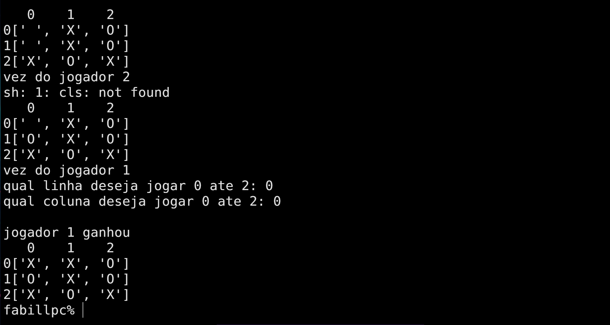

fj.amorim1808@gmail.com

Quem eu sou?
curso Ciência da computação na UFPA, atualmente
ultilizo tecnologias como HTML CSS JavaScript e Python,
busco de experimentar e aprender diversas tecnologias para o crescimento
da minha carreira profisional
projetos
cartão de aniversario interativo
Cartão de Aniversário (HTML/CSS): Focado em Front-end e Design. Um projeto responsivo que utiliza CSS para estética e JavaScript para interatividade (como botões e player de música).
jogo da velha em Python
jogo da velha em pythom com a opção de um ou dois jogadores, com a ultilização e validação de do valor da matriz para a escolha da coordenada do bot.
Snake
Snake (HTML/JS): Um laboratório de lógica pura. Foca no uso de arrays para o corpo da cobra e no controle de coordenadas (eixos x e y) para gerenciar movimento e colisões.